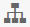
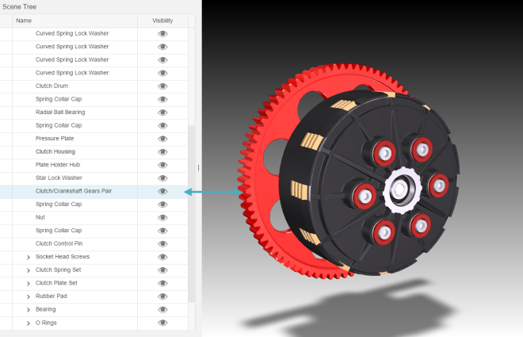
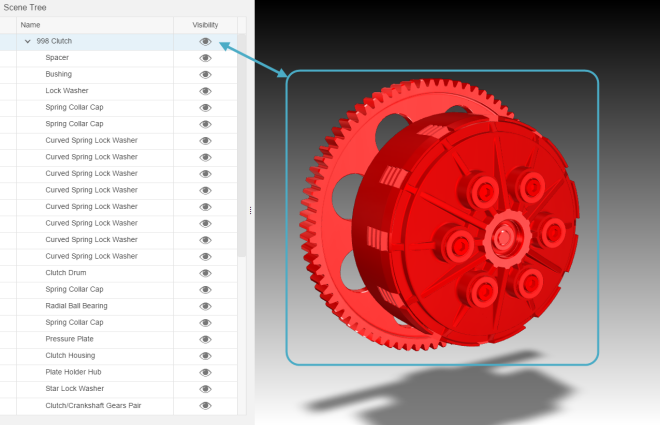
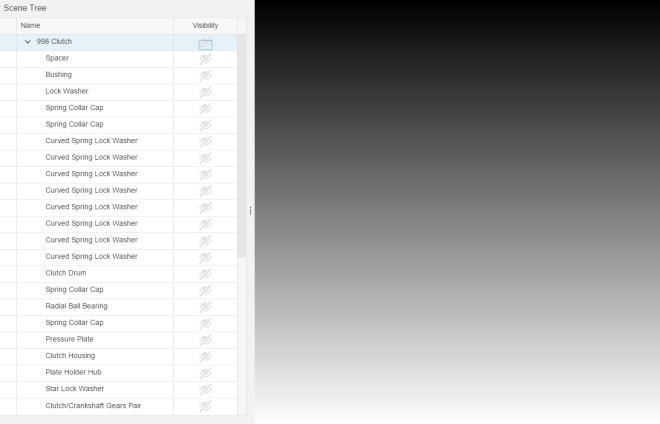

The sap.ui.vk.SceneTree control presents a hierarchical view of the
nodes in a given scene.
The Scene Tree control (sap.ui.vk.SceneTree) presents a hierarchical
view of all the nodes in a given scene.
Before a scene's nodes can appear in the Scene Tree, the Scene Tree control needs to be connected to:
ViewStateManager object, which handles the visibility and
selection states of a sceneScene object, so that the Scene Tree knows the nodes to
display in the hierarchyThe Scene Tree displays the collection of nodes in a
scene. You can add a Scene Tree to your application by using the
sap.ui.vk.SceneTree control. The Scene Tree is also avaliable
in the composite sap.ui.vk.Viewer control.
Before a scene's nodes can appear in the Scene Tree, you will need to set up two-way data binding between the Scene Tree and the Viewport in your application. Note that you can only bind to one Viewport instance at a time.
The following sections outline the Scene Tree's selection and visibility behavior in more detail.
When using the sap.ui.vk.Viewer control, the Scene Tree is
enabled by default, which means that a SceneTree instance is
created. You can toggle the visibility of the Scene Tree using the Scene Tree
button in the Toolbar.
The following table outlines what the Scene Tree button looks like in these different states:
| Scene Tree button state | Description |
|---|---|
| Scene Tree is shown (this is the default state). | |
|  | Scene Tree is hidden. |
| Scene Tree is disabled, or, if a 2D file is loaded into the Viewer application. |
By default, the Scene Tree is collapsed so that only the top-level nodes in the Scene are displayed.
You can expand the Scene Tree by clicking on the > icon next to a node to display that node's child nodes.
Selecting a node in the Scene Tree will highlight that node in the Viewport, and vice versa. If you select a node in the Viewport that is currently hidden in the Scene Tree, the Scene Tree will expand automatically to display the selected node in the Scene Tree's hierarchy.
Selecting a node in the Scene Tree that has child nodes will result in the node and its child nodes being selected in the Viewport.
You can toggle between displaying or hiding a node from view in the Viewport by clicking the 'eye' icon next to a node in the Scene Tree. The following example shows a comparison of two similar nodes, but with one node being hidden from view.
If you toggle the visibility for a node that has child nodes, the visibility change will apply to the child nodes as well. The following example shows the root node being set to hidden, resulting in all of its child nodes being hidden as well.
